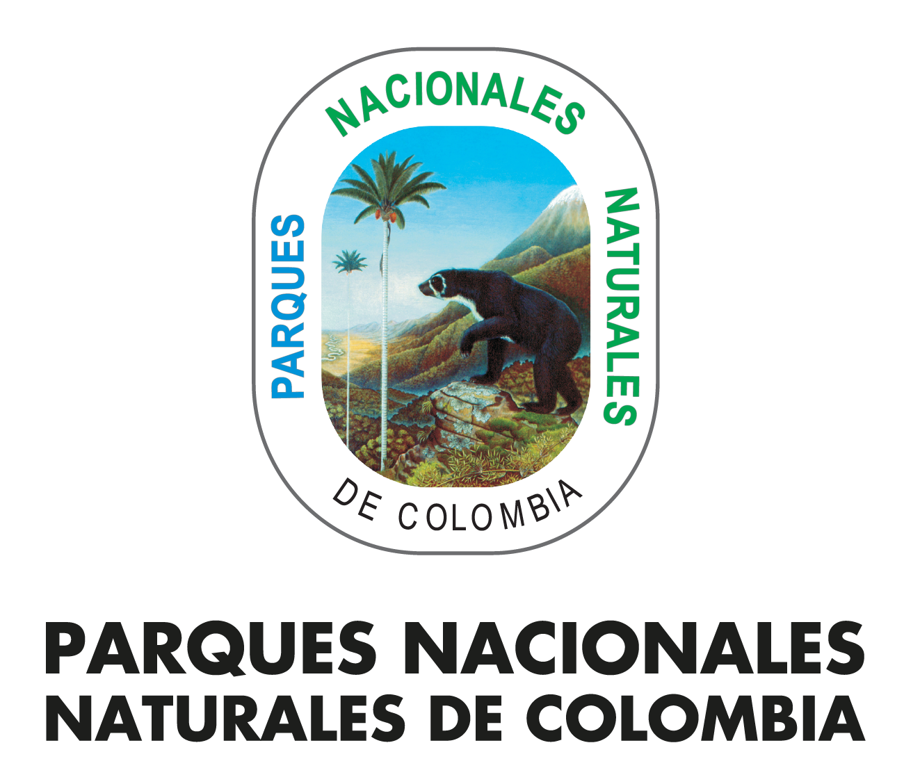

Parques Nacionales Naturales de Colombia
Catálogo de Restauración Ecológica
Parque Nacional Natural Sanquianga
Código: PNN-SAN
Categoría: Parque Nacional Natural
Región: Dirección Territorial Pacífico
Departamento: Nariño
Municipio(s): Mosquera, Olaya Herrera, La Tola y El Charco
Área protegida del Pacífico colombiano con ecosistemas de manglar, estuarios y alta importancia para procesos de restauración ecológica.
Número de especies registradas: 1
Fecha de generación: 6/7/2026
Índice de especies

Mangle Rojo
Nombre científico: Rhizophora mangle
Familia: Rhizophoraceae
Categoría: Árbol
Ecosistema: Manglar
Estado de conservación: Preocupación Menor
Método de propagación: Propágulos
Descripción
Especie característica de los manglares del Pacífico colombiano.
Hábitat
Distribución
Floración
Fructificación
Importancia ecológica
Uso en restauración
Recomendaciones
Observaciones
Experiencias de propagación
Propagación en vivero Sanquianga
Año: 2025
Ubicación: PNN Sanquianga
Vivero: Vivero Principal
Responsable: Equipo de Restauración
Objetivo:
Producción de plántulas para restauración.
Metodología:
Propagación mediante propágulos.
Resultados:
Alta supervivencia de plántulas.
Lecciones aprendidas:
Mantener control de salinidad.
Observaciones:
Experiencia piloto.
Referencias bibliográficas
Manual para la restauración de manglares del Pacífico colombiano
Autores: Parques Nacionales Naturales de Colombia
Año: 2022
Fuente: PNN Colombia
URL: https://www.parquesnacionales.gov.co/
Documento técnico utilizado para restauración ecológica.